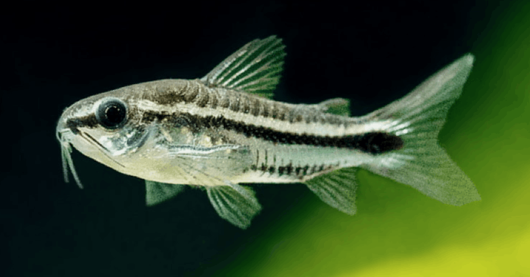
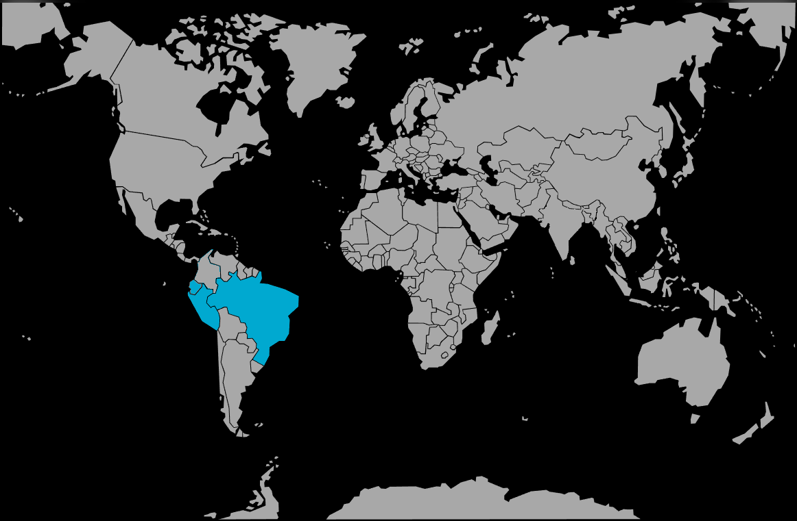

Systématique
- Ordre : Siluriformes
- Famille : Callichthyidae
- Genre : Corydoras
- Espèce : C. pygmaeus

Corydoras pygmaeus, ou Corydoras pygmée, est l'un des plus petits représentants de son genre, décrit par Knaack en 1966.
Il ne dépasse pas 2,5 à 3 cm à l'âge adulte. Il se distingue facilement par sa coloration argentée traversée par une ligne noire continue horizontale allant du museau jusqu'à la queue. Il ne faut pas le confondre avec Corydoras hastatus (qui a une tache en forme de flèche sur la queue) ou Corydoras habrosus (qui est tacheté et vit au fond).
C'est une espèce idéale pour les petits volumes (nano-aquariums), mais attention à sa fragilité relative lors de l'acclimatation.
Contrairement à la majorité des Corydoras qui fouillent le sol en permanence, C. pygmaeus est un poisson qui nage volontiers en pleine eau (zone médiane), souvent en groupe serré, et se pose sur les feuilles des plantes pour se reposer.
C'est un poisson strictement grégaire qui nécessite un groupe d'au moins 10 individus. En dessous de ce nombre, il est extrêmement timide, reste caché et son espérance de vie diminue. Il est très pacifique et cohabite bien avec les crevettes et les micro-poissons.
Mode : ovipare.
La reproduction est possible en aquarium mais les œufs sont minuscules (environ 1 mm). Les femelles déposent les œufs un par un sur les vitres ou les plantes à feuilles fines après la fécondation en "T" par le mâle.
Les alevins sont microscopiques à l'éclosion et nécessitent des infusoires ou de la nourriture liquide très fine pour survivre les premiers jours.
Dimorphisme sexuel : Les femelles sont visiblement plus grosses, plus longues et surtout plus rondes au niveau du ventre que les mâles, qui restent très sveltes.
Espérance de vie : Environ 3 à 5 ans.
Il est originaire du bassin de la rivière Madeira au Brésil, mais on le trouve aussi au Pérou et en Équateur (bassin de l'Amazone).
Il fréquente les petits affluents, les criques forestières et les zones inondées à courant très lent, où la végétation est dense et l'eau souvent ombragée.
Répartition

Origine naturelle :
- Amérique du Sud.
- Brésil (Bassin du Rio Madeira).
- Pérou.
- Équateur.
Paramètres de maintenance
Température : 22 à 26 °C.
pH : 6,0 à 7,5.
GH : 2 à 12 °dGH.
Substrat : Sable fin recommandé, bien qu'il nage souvent au-dessus.
Volume conseillé : Minimum 40 à 50 L. Bien qu'il soit petit, il a besoin d'être en groupe (10+) pour se sentir en sécurité, ce qui demande un minimum d'espace.
Régime alimentaire
Régime : omnivore / micro-prédateur.
Sa bouche est minuscule. Il ne peut pas avaler de gros granulés.
Il nécessite une nourriture fine : nauplies d'artémias, micro-vers, poudres pour alevins, comprimés de fond écrasés. Il passe beaucoup de temps à picorer le biofilm sur les plantes et les racines.